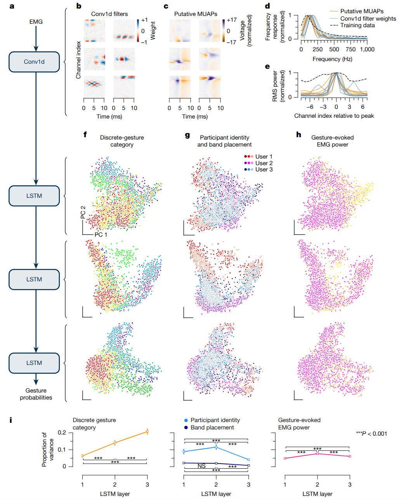

📃sEMG-RD 리뷰
- 🧠 이 연구는 기존 인터페이스의 한계를 극복하기 위해 일반화 가능한 비침습성 뉴로모터 인터페이스를 개발했으며, 이를 위해 표면 근전도(sEMG) 신호를 해석하는 손목 밴드를 활용했습니다.
- 💡 수천 명의 참가자로부터 대규모 훈련 데이터를 수집하는 확장 가능한 인프라를 구축하여, 개인별 맞춤 학습 없이도 다양한 사용자에게 적용 가능한 범용 sEMG 디코딩 모델을 성공적으로 개발했습니다.
- 🚀 이 인터페이스는 연속적인 내비게이션, 개별 제스처 인식, 그리고 분당 20.9단어의 필기 입력과 같은 다양한 폐쇄 루프(closed-loop) 상호작용에서 우수한 성능을 보였으며, 개인화 모델을 통해 필기 인식 정확도를 16% 추가 개선할 수 있었습니다.
Brief Review
본 연구는 컴퓨터 입력 기술의 오랜 목표인 표현력, 직관성, 보편성을 충족하는 새로운 비침습적 신경운동 인터페이스 개발에 대해 상세히 설명합니다. 기존의 키보드, 마우스, 터치스크린과 같은 입력 방식은 기기와의 물리적 상호작용이 필요하며, 카메라 기반 제스처 시스템은 움직임이 가려질 경우 성능이 저하되는 한계가 있습니다. 침습적 뇌-컴퓨터 인터페이스(BCI)는 고대역폭 통신을 가능하게 했지만, 외과적 수술이 필요하고 개별 맞춤형 디코더가 요구되어 대중적 적용에 어려움이 있었습니다. 이 연구는 표면 근전도(sEMG) 신호를 디코딩하여 컴퓨터 입력이 가능한 일반화된 비침습적 신경운동 인터페이스를 제시합니다.
핵심 방법론:
- 하드웨어 개발:
- sEMG-RD (sEMG Research Device): 이 연구의 핵심 하드웨어인 sEMG-RD는 손목에 쉽게 착용할 수 있는 고감도, 건식 전극, 다채널 기록 플랫폼입니다.
- 특징: 48개의 전극 핀이 16개의 양극성 채널로 구성되어 근육의 전기 신호를 감지합니다. 높은 샘플링 속도(2 kHz)와 낮은 노이즈(2.46 \mu \text{Vrms}) 특성을 가지며, 4가지 크기로 제작되어 다양한 손목 둘레에 맞도록 설계되었습니다. 무선 Bluetooth 통신을 지원하며 4시간 이상의 배터리 수명을 제공합니다. 전극 간 간격은 근육 밀도가 낮은 척골 부위에 배치되어 미세한 운동 단위 활동 전위(MUAP)를 감지할 수 있습니다.
- 목적: 사람마다 다른 해부학적 구조, 생리적 특성, 센서 배치 변동성에도 불구하고 견고하고 일반화된 sEMG 디코딩 모델을 구축하기 위함입니다.
- 데이터 수집 및 전처리:
- 확장성 있는 인프라: 수천 명의 다양한 참여자로부터 대규모 학습 데이터를 수집하기 위한 자동화된 행동 유도 및 참여자 선정 시스템을 구축했습니다.
- 데이터셋 구성:
- 손목 제어 (Wrist Control): 162명의 참여자로부터 sEMG와 모션 캡처를 통한 손목 굴곡-신전 각도 데이터를 동시 기록했습니다. 개방 루프(cursor-to-target, smooth pursuit) 및 폐쇄 루프 설정에서 데이터가 수집되었습니다.
- 이산 제스처 감지 (Discrete Gesture Detection): 4,900명의 참여자로부터 아홉 가지(집게손가락/가운데손가락 누르기/떼기, 엄지손가락 탭, 엄지손가락 좌/우/위/아래 쓸기) 제스처 데이터를 수집했습니다. 다양한 자세(손을 앞으로, 손바닥 안/밖/위, 무릎에 손 등)에서 데이터가 수집되어 견고성을 확보했습니다.
- 필기 변환 (Handwriting Transcription): 총 6,627명의 참여자로부터 sEMG 기록을 수집했습니다. 글자, 숫자, 단어, 구문 등을 필기하는 데이터로 구성되며, 묵시적/명시적 공백 입력 방식이 사용되었습니다. 참여자들은 앉아서 책상 위, 앉아서 다리 위, 서서 다리 위 등 다양한 자세로 필기를 수행했습니다.
- 실시간 처리 엔진: sEMG 활동과 프롬프트 라벨의 타임스탬프를 동시에 기록하여 온라인-오프라인 편차를 줄였습니다.
- 시간 정렬 알고리즘: 참여자의 반응 시간 변동성을 고려하여 이산 제스처 이벤트 시간을 정밀하게 추론하기 위한 시간 정렬 알고리즘을 개발했습니다. 이는 관측된 데이터를 가장 잘 설명하는 제스처 타이밍 시퀀스를 생성 모델 기반으로 탐색하는 방식입니다.
- sEMG 전처리 (MPF 특징): 손목 및 필기 디코더를 위해 ‘다변량 전력 주파수(MPF)’ 특징을 사용했습니다. 이는 2 kHz 샘플링된 sEMG 신호에 40 Hz 고역 통과 필터를 적용한 후, 롤링 윈도우(손목: 100 ms, 필기: 80 ms)에서 채널 간 스펙트럼 밀도(cross-spectral density)의 제곱 크기를 추출하고 6개의 주파수 빈으로 분리한 다음, 로그 행렬 연산을 적용하여 384차원의 벡터를 생성합니다. 이산 제스처의 경우, MUAP와 유사한 생리적 특징을 포착하기 위해 원본 sEMG 데이터를 사용했습니다.
- 모델링 (딥 러닝) 및 일반화:
- 모델 아키텍처:
- 손목 디코더: MPF 특징을 입력으로 받아 회전 불변 모듈을 통과시킨 후 두 개의 LSTM 레이어를 거쳐 1차원 출력을 생성합니다.
- 이산 제스처 디코더: 원본 sEMG 신호에 1D 컨볼루션 레이어(2 kHz를 200 Hz로 다운샘플링), 드롭아웃, 레이어 정규화를 거쳐 세 개의 LSTM 레이어와 최종 선형 출력 레이어를 통해 9가지 제스처의 확률을 예측합니다.
- 필기 디코더: MPF 특징을 입력으로 받아 회전 불변 모듈을 통과시킨 후, 15개의 계층으로 구성된 Conformer 아키텍처를 사용합니다. Conformer는 어텐션 메커니즘을 통해 풍부한 문맥 정보를 처리하며, CTC(Connectionist Temporal Classification) 손실 함수를 사용하여 정밀한 시간 정렬 없이 sEMG 신호와 텍스트 전사(transcription)를 직접 매핑할 수 있도록 훈련됩니다. FastEmit 정규화 기법을 적용하여 스트리밍 지연 시간을 줄였습니다.

Model Structure
- 스케일링 법칙: 훈련 참여자 수와 모델 크기를 늘림에 따라 디코딩 성능이 향상되는 것을 확인했으며, 이는 대규모 언어 모델 및 비전 트랜스포머에서 관찰된 스케일링 법칙과 일치합니다. 오류는 모델 크기(D)와 데이터 양(N)의 함수로 다음과 같이 표현됩니다. \text{Error} = e + A_N N^{-\alpha_N} + A_D D^{-\alpha_D} 여기서 e는 비가역적 오류이며, A_N, A_D, \alpha_N, \alpha_D는 피팅된 양의 매개변수입니다.
- 교차-사용자/교차-세션 일반화: 단일 참여자 모델은 다른 참여자에게 일반화하기 어렵다는 기존 BCI 연구의 한계를 확인했습니다. sEMG 신호는 센서 배치, 해부학, 생리, 행동의 변화로 인해 참여자 및 세션 간에 큰 변동성을 보였습니다. 본 연구의 일반화 모델은 이 문제들을 극복하고 새로운 참여자에게도 바로 적용 가능합니다.
- 모델 해석: 이산 제스처 디코더의 컨볼루션 필터는 MUAP의 통계적 특성과 유사한 시공간적 패턴을 학습했습니다. LSTM 표현은 네트워크 깊이가 깊어질수록 제스처 범주가 더욱 분리되고, 참여자 정체성이나 밴드 배치와 같은 방해 변수에 덜 민감해지는 경향을 보였습니다.
- 모델 아키텍처:
- 주요 결과 및 성능:
- 폐쇄 루프(온라인) 평가: 이전 경험이 없는 새로운 참여자들을 대상으로 평가를 수행했습니다.
- 손목 제어: 연속 항해 작업에서 초당 0.66개의 목표 획득 성능을 보였습니다. 획득 시간과 다이얼-인 시간 모두 연습 블록에서 평가 블록으로 갈수록 향상되었습니다.
- 이산 제스처: 이산 제스처 작업에서 초당 0.88개의 제스처 감지 성능을 보였습니다. 첫 감지 제스처 일치 확률 및 제스처 완료율도 연습을 통해 향상되었습니다.
- 필기: 분당 20.9 단어(WPM)의 필기 속도를 달성했습니다. CER(문자 오류율)도 연습을 통해 감소했습니다.
- 베이스라인 비교: MacBook 트랙패드, Nintendo Joy-Con 게임 컨트롤러, 펜 없는 필기와 같은 기존 인터페이스 대비 아직 성능은 낮지만, sEMG 손목 밴드는 상시 착용 가능하고, 손을 구속하지 않는다는 장점이 있습니다.
- 개인화 효과: 일반화된 모델을 특정 참여자의 추가 데이터로 미세 조정(fine-tuning)하여 성능을 향상시키는 개인화 가능성을 확인했습니다. 20분간의 개인화 데이터만으로도 필기 디코딩의 CER이 중앙값 기준으로 16% 개선되었습니다. 일반화 모델의 규모가 클수록 개인화에 따른 개선 폭은 줄어드는 경향을 보였으나, 성능이 낮은 사용자에게는 상당한 상대적 성능 향상을 제공했습니다.
- 폐쇄 루프(온라인) 평가: 이전 경험이 없는 새로운 참여자들을 대상으로 평가를 수행했습니다.
의의 및 미래 방향:
본 연구는 비침습적 생체 신호를 활용하여 다양한 컴퓨터 상호작용을 가능하게 하는 일반화된 신경운동 인터페이스 구축의 새로운 틀을 제시했습니다. 이는 기존 BCI 및 sEMG 시스템의 일반화 문제를 해결하는 데 기여합니다. 향후 연구 방향으로는 의도된 제스처의 힘과 같은 직접적인 운동 신호 감지, 다중 자유도 동시 제어, 최소한의 노력으로 작동하는 제어 방식(예: 미세한 근육 움직임으로 제어) 개발 등이 있습니다. 또한, 신경피드백, 새로운 운동 기술 학습, 운동 단위 제어 연구를 위한 플랫폼으로 활용될 수 있습니다. 임상 분야에서는 이동성이 제한되거나 근육 약화가 있는 환자를 위한 상호작용 방식 개발 및 신경 재활 패러다임 구축에 기여할 수 있을 것으로 기대됩니다.
Detail Review
표면 근전도 기반 범용 신경모터 인터페이스: 차세대 HCI를 향한 Nature 논문 심층 리뷰
1. 연구 배경 및 문제의식
오늘날 컴퓨팅 기술의 발전과 함께 입력 장치의 한계가 꾸준히 제기되고 있습니다. 키보드와 마우스, 터치스크린 등 기존 인터페이스는 책상 위나 손에 쥐고 사용할 물리적 기기가 필요하며, 스마트폰이나 AR 글래스 같은 이동 환경에서는 사용에 제약이 있습니다. 예를 들어 증강현실(AR) 안경을 착용한 사용자가 길을 걸으며 정보를 얻거나 메시지를 보내고 싶어도, 주머니에서 스마트폰을 꺼내거나 공중에 손짓을 크게 해야 한다면 경험이 끊기고 불편함이 발생합니다. 카메라 기반 제스처 인식은 카메라 시야가 확보되고 조명이 충분할 때만 정확하고, 손동작이 미세하거나 가려지면 인식 성능이 떨어집니다. 음성 제어는 주변에 소리가 공개되어 프라이버시 문제가 있고 시끄러운 환경에서는 어려움이 있습니다. 한편, 뇌에 센서를 이식해 의도를 읽는 침습적 뇌-컴퓨터 인터페이스(BCI)는 최근 연구에서 놀라운 성과를 내기도 했지만, 고성능을 내려면 머리에 전극을 심는 수술이 필요하고 개인 맞춤 복잡한 보정 과정이 필수라는 현실적인 장벽이 있습니다.
이런 배경에서 Meta Reality Labs(전 Facebook Reality Labs)는 차세대 입력 기술로 신경 신호를 이용한 손목밴드 인터페이스를 제시했습니다. 특히 2021년경부터 뇌에 전극을 삽입하는 방식 대신 손목의 근전도 신호를 사용하는 접근법에 집중해 왔습니다. 최근 2025년 7월에는 해당 연구의 핵심 성과를 담은 논문을 Nature 저널에 발표하여 학계의 동료 심사 검증까지 받았습니다. Meta는 이 연구에서 손목에 착용하는 표면 근전도(sEMG) 기반 신경모터 인터페이스가 “차세대 인간-컴퓨터 상호작용(HCI)의 열쇠”라고 강조합니다. 다시 말해 사용자의 손목 근육에 흐르는 전기 신호를 읽어 별도의 물리적 장치 없이도 컴퓨터나 AR 안경을 조작할 수 있다는 것입니다. 이는 사용자의 손짓이나 의도를 눈에 띄지 않게 파악해주므로, 키보드나 마우스를 대체하고도도 자연스럽고 은밀한 상호작용을 가능케 할 새로운 패러다임으로 기대되고 있습니다.
Meta는 2024년 자체 행사(Connect)를 통해 Orion이라는 코드명의 자사 첫 AR 안경 프로토타입을 공개한 바 있는데, 여기에도 초기형 sEMG 손목밴드가 시연되었습니다. 이번 Nature 논문은 바로 그 손목밴드 기반 인터페이스 기술을 학술적으로 정리한 것으로, Orion AR 안경과 함께 일상적인 AR 상호작용을 구현하려는 노력의 연장선에 있습니다. 요약하면, 연구진의 문제의식은 “언제 어디서나 쓸 수 있고, 사용자 개개인 맞춤 보정이 필요 없으며, 생각이나 작은 손짓만으로도 입력이 가능한 범용 인터페이스”의 필요성이었습니다. 이러한 목표를 달성하기 위해 선택된 접근이 비침습적으로 손목 근육의 전기 신호를 읽어내는 sEMG와 머신러닝 기술의 결합이었다는 점이 본 연구의 출발점입니다.
2. 사용된 기술 개요 (표면 EMG 및 머신러닝 아키텍처 등)
표면 근전도(surface EMG, sEMG)란 피부 표면에 전극을 부착하여 그 아래 근육에서 발생하는 미세한 전기 신호를 측정하는 기술입니다. 뇌가 손가락을 움직이라는 명령을 내릴 때, 해당 신경 신호가 근육을 수축시키며 전기적 활동을 일으키는데, sEMG는 이 근육 전기 신호의 패턴을 포착합니다. 손목에는 손가락과 손 움직임을 제어하는 여러 근육의 힘줄과 근육들이 지나가기 때문에, 손목 부위의 sEMG로 손 움직임 전반을 읽어낼 수 있습니다. 이는 마치 “손목에서 생각을 읽는” 것과 같으며, 손가락을 실제로 움직이지 않고 마음먹기만 해도 근육에 약한 신호가 흐르기 때문에 겉으로 티 나지 않는 입력도 잡아낼 수 있습니다. 이러한 sEMG 기반 인터페이스는 비침습적이어서 수술이 필요 없고, 시각적 제스처 인식에 비해 가려짐이나 어두운 환경의 영향을 받지 않는 장점이 있습니다.
연구팀은 손목 시계 정도 크기의 무선 sEMG 손목밴드를 자체 개발했습니다. 이 기기는 48개의 전극 핀을 이용해 16채널 sEMG 신호를 수집하며, 2 kHz의 높은 샘플링 레이트와 2.46 μV\_rms의 낮은 노이즈 수준을 자랑합니다. 전극 배열은 손목 둘레를 따라 근육 밀도가 낮은 부위를 피하면서 배치되어, 미세한 근육 전위(MUAP)까지 포착할 수 있도록 설계되었습니다. 기기는 착용자의 손목 굵기에 맞춰 4가지 크기로 제작되었고, 몇 초 만에 쉽게 착용(don)하거나 해제(doff)할 수 있을 정도로 편리성을 갖추었습니다. 또한 배터리로 4시간 이상 연속 동작하며 블루투스 무선 통신으로 컴퓨터와 데이터를 주고받아, 일상 생활 환경에서 사용 가능하도록 만들었습니다. 아래 사진은 연구에 사용된 sEMG 손목밴드 프로토타입의 모습입니다.
Meta Reality Labs에서 개발한 sEMG 기반 손목밴드 프로토타입. 사용자의 팔목에 착용되어 있으며, 이 밴드의 내부 전극들이 손과 손가락을 움직일 때 발생하는 근육의 전기신호를 포착한다. 이렇게 수집된 신호를 무선으로 전송하고 머신러닝 알고리즘을 통해 실시간으로 해석함으로써, 사용자 의도를 컴퓨터 입력으로 변환할 수 있다.
이 손목밴드에서 취득한 다차원 근전도 시계열 데이터를 실시간 해석하기 위해, 연구진은 딥러닝 기반의 머신러닝 아키텍처를 개발했습니다. 수천 명에 달하는 피험자들로부터 대량의 sEMG 데이터를 확보한 뒤, 이를 지도학습으로 신경망에 학습시켜 사용자 의도 → 컴퓨터 명령으로 변환하는 모델들을 만들었습니다. 모델 구조는 시계열 근육 신호의 특성을 잘 포착하도록 설계되었는데, 예를 들어 멀티채널 시계열 신호 처리에 특화된 1차원 컨볼루션 계층과 순환 신경망(LSTM) 계층을 쌓아 제스처를 분류하는 모델이 사용되었습니다. 또한 손목밴드의 위치가 조금 달라지거나 사용자마다 신호 패턴이 다른 문제를 해결하기 위해, 채널 회전 불변성 모듈 등 특수한 입력 전처리와 특징 추출 기법(MPF 특징)을 도입하여 모델이 잡음 요인에 영향을 덜 받도록 설계했습니다. 핸드라이팅(손글씨) 인식처럼 복잡한 연속적 동작을 해석하는 경우에는, 음성 인식 분야에서 쓰이는 CTC(Connectionist Temporal Classification) 학습 기법과 Conformer 기반 트랜스포머 신경망을 활용했습니다. 이는 정확한 타이밍 정렬 없이도 시계열 신호와 텍스트 결과를 학습시킬 수 있는 방법으로, 근전도 신호의 패턴을 문자 시퀀스로 변환하는 데 효과적이었습니다. 전체적으로 이러한 맞춤형 딥러닝 아키텍처 덕분에, 본 연구의 sEMG 해독 모델은 새로운 사람에게도 별도 보정 없이 동작할 수 있는 범용성과 다양한 손동작을 실시간 인식할 수 있는 표현력을 모두 갖추게 되었습니다.
3. 주요 실험 및 결과 요약
연구진은 개발한 sEMG 손목밴드와 해독 알고리즘의 성능을 평가하기 위해 세 가지 대표 과제를 설정했습니다. - 첫째는 손목 각도 제어 실험으로, 사용자가 손목을 위아래로 기울여 화면상의 커서를 1차원 이동시키는 연속 제어 과제입니다. - 둘째는 불연속 제스처 인식 실험으로, 화면에 제시되는 지시에 따라 손가락 모으기(pinching)나 손가락 튕기기(swipe) 등 9가지 손동작 제스처를 수행하면 이를 인식해내는 과제입니다. - 셋째는 손글씨 쓰기(handwriting) 실험으로, 화면에 단어가 주어지면 사용자가 실제 펜을 쥔 것처럼 손가락을 움직여 공중에 해당 단어를 쓰는 동작을 하고, 이를 근전도 신호로부터 해독하여 텍스트로 인식하는 과제입니다.
이 실험들을 위해 연구팀은 총 수천 명 규모의 다양한 피험자를 모집하여 데이터를 수집했습니다. 예를 들어 손글씨 데이터의 경우 6,627명의 참가자가 한 손가락에 펜을 쥐었다고 가정하고 공중에 단어를 쓰는 동작을 하여 방대한 근전도 데이터셋을 구성했습니다. 제스처 인식의 경우 1인당 아홉 가지 손동작을 여러 번 반복하게 하여 각 제스처마다 수천 건의 시그널 샘플을 확보했습니다. 이렇게 대규모 데이터 수집이 가능했던 것은, 손목밴드가 비교적 착용이 간편하고 무선으로 동작하여 다양한 환경에서 많은 사람들에게 적용할 수 있었기 때문입니다. 또한 동일인이 손목밴드를 뗐다가 다시 착용하는 등 센서 위치 변화에 따른 데이터도 포함시켜, 모델이 이러한 변동성에 견딜 수 있도록 했습니다.
수집된 데이터를 활용하여 오프라인(offline) 성능 평가와 온라인(online) 실시간 실험이 진행되었습니다. 먼저 오프라인 평가에서는 각 과제별로 훈련되지 않은 새로운 참가자의 데이터를 모델이 얼마나 정확히 해석하는지 측정했습니다. 그 결과 필기 입력과 제스처 인식에서 90% 이상의 분류 정확도를 달성했고, 연속 손목 각도 추정에서도 초당 13도 미만의 평균 오차로 손목 움직임 속도를 예측할 수 있었습니다. 이는 별도의 개인별 보정이나 추가 학습 없이도, 훈련에 포함되지 않은 새로운 사용자의 근전도 신호를 높은 정확도로 이해해냈다는 뜻입니다.
다음으로 좀 더 실제 사용 상황에 가까운 실시간 인터랙션 실험(온라인 실험) 결과를 살펴보겠습니다. 연속 커서 제어 과제에서는 사용자가 목표 지점을 향해 커서를 움직여 맞추는 속도가 중앙값 기준 초당 0.66개의 타깃에 도달했습니다. 이는 사용자가 약 1.5초에 하나씩 목표를 정확히 선정할 수 있었음을 의미하며, 간단한 손목 움직임만으로 화면 상의 목표를 연속적으로 가리킬 수 있음을 보여줍니다. 불연속 제스처 과제에서는 초당 0.88개의 제스처를 제대로 인식해냈는데, 9가지 손동작 중 하나를 사용자가 수행하면 약 1.1초 내에 이를 판별해 입력 명령으로 삼을 수 있다는 뜻입니다. 가장 복잡한 손글씨 쓰기에서는 평균 분당 20.9단어(WPM)의 속도로 단어를 인식해냈습니다. 일반적인 키보드 타자가 분당 40~60단어 수준인 것과 비교하면 아직 절반 정도 속도이지만, 손을 공중에 움직여 쓴 글씨를 근전도로 해석하여 얻은 속도로서는 상당히 고무적인 결과입니다. 더욱이 사용자별 약간의 추가 훈련(퍼스널라이제이션)을 거치면 필기 인식 속도가 약 16% 개선되어 약 분당 24단어 이상으로 향상될 수 있음을 확인했습니다. 이러한 결과들은 이 손목밴드 기반 인터페이스가 단순 포인터 움직임부터 제스처 명령, 텍스트 입력까지 다양한 입력 작업을 꽤 높은 정확도와 실용적인 속도로 수행할 수 있음을 보여줍니다.
흥미로운 점은, 위 성능이 사용자 간 교차 검증으로 얻어진 것이란 사실입니다. 즉, 어떤 사람이 처음 이 장치를 착용하더라도 미리 학습된 범용 모델로 즉시 80~90% 이상의 성능을 기대할 수 있다는 것입니다. 이는 기존의 많은 BCI나 근육 인터페이스 연구에서 개인별 보정 없이 높은 정확도를 내기 어려웠던 점을 크게 개선한 부분입니다. 연구진은 “우리가 아는 한, 이번에 달성한 수준은 사람 간 일반화에 성공한 신경모터 인터페이스로서 최고 수준의 대역폭 성능”이라고 자평하고 있습니다.
4. 기술적 의의 및 혁신성 분석
이 연구는 비침습적 웨어러블 기기와 대규모 딥러닝을 결합함으로써, 오랫동안 난제로 여겨진 범용 뇌-기계 인터페이스에 새로운 해법을 제시했다는 점에서 큰 의의를 갖습니다. 우선 기술적 혁신의 핵심은 “고대역폭 + 범용성”이라는 두 마리 토끼를 잡았다는 점입니다. 고대역폭(high-bandwidth)이란 단위 시간당 많은 정보量을 전달할 수 있다는 뜻으로, 본 장치는 손목의 미세 신호를 통해 사람의 의도를 빠르게 읽어 다채로운 명령을 내릴 수 있게 해주었습니다. 예컨대 초당 0.88 제스처나 분당 20개 이상의 단어 입력은, 기존의 어떤 비침습 BCI 장치보다도 훨씬 높은 통신 속도입니다. 동시에 범용성(generality)이란 여러 사람에게 두루 통하는 보편성을 말하는데, 이 연구에서는 수천 명의 데이터를 학습한 모델을 통해 개인 차이를 극복한 보편 모델을 구현했습니다. 덕분에 사용자마다 별도로 캘리브레이션(calibration)하거나 다시 훈련시키지 않아도 “바로 착용하면 동작하는” 인터페이스를 시현한 것입니다. 이는 신경신호 기반 인터페이스 분야에서 첫 사례로 평가되며, 향후 관련 연구개발에 새로운 표준을 세운 성과로 볼 수 있습니다.
또한 이 연구는 데이터 주도 접근법으로 혁신을 이끈 점도 주목해야 합니다. 기존에는 한정된 피험자(수십 명 이하)와 제한된 데이터로 모델을 만들어서 사람 간 변동성을 감당하지 못하는 경우가 많았습니다. 반면 이 논문은 수천 명 규모의 데이터셋을 구축하고, 거기에 특화된 모델 아키텍처를 고안함으로써 “데이터와 학습으로 해법을 찾은” 전례를 만들었습니다. 이는 마치 언어 AI가 방대한 코퍼스로 언어 이해를 향상시켰듯, 신경인터페이스도 빅데이터로 성능을 끌어올린 사례라 할 수 있습니다. 특히 제스처 인식 모델에 1차원 CNN+LSTM 구조를 쓰고 필기 인식에는 음성인식 모델 기법(Conformer+CTC)을 적용한 것은, 각 문제에 최적화된 딥러닝 모듈을 적재적소에 활용한 것으로 모델링 측면의 창의성을 보여줍니다. 이러한 맞춤 설계 덕분에 신호 노이즈, 사람마다 다른 근육 사용 습관, 밴드 위치 변화 등의 잡음 변수(nuisance variables)를 신경망이 내부적으로 점차 불변(feature invariance)으로 처리할 수 있게 되었음을 연구진은 확인했습니다. 쉽게 말해, 딥러닝이 다양한 상황 속에서도 손동작의 본질적 패턴을 학습해낸 것입니다.
하드웨어 측면에서도 공학적 진보가 돋보입니다. 연구팀의 sEMG 손목밴드는 기존 연구용 근전도 장비들처럼 거추장스러운 전선이나 거대한 증폭기 없이, 손목시계 크기의 일체형 기기로 구현되었습니다. 건식 전극(pin 형태)을 사용해 겔을 바르거나 피부를 특별히 처리하지 않아도 되는 점, 극미한 신호까지 증폭해내는 자체 회로 기술, 블루투스를 통한 실시간 전송 등은 웨어러블 인터페이스 기기로서 완성도를 높여주는 요소입니다. 또한 사용자 편의성을 고려해 4종 사이즈를 제작하고 수 초 내 착탈이 가능하도록 한 부분에서도, 연구용 프로토타입을 넘어 실제 제품화를 염두에 둔 설계 의도를 엿볼 수 있습니다.
더 나아가 이 연구는 AR 글래스와의 결합이라는 명확한 사용 시나리오를 바탕으로 한다는 점에서도 의미가 큽니다. Orion이라 불리는 Meta의 AR 안경 프로토타입은 외형상 일반 안경과 비슷하지만, 렌즈에 마이크로 디스플레이를 내장해 눈앞에 홀로그램 정보를 띄워주는 첨단 웨어러블 컴퓨터입니다. 그러나 이러한 AR 안경이 실생활에 보급되려면 사용자 명령을 입력하는 효율적이고 자연스러운 방법이 반드시 필요합니다. 손가락을 허공에서 튕기거나 음성으로 명령하는 방식은 눈에 띄고 어색하며 한계가 있습니다. 이번 연구의 손목밴드 인터페이스는 눈에 보이지 않는 작은 손 근육 신호만으로 AR 안경을 제어할 수 있게 함으로써, 마치 “생각만으로 기기를 조종”하는 듯한 경험을 선사합니다. 이는 향후 AR 글래스 보급의 장애였던 입력 문제를 해결하는 열쇠로서, Meta가 왜 이 기술을 차세대 HCI 패러다임의 핵심으로 칭하는지 알 수 있는 대목입니다.
마지막으로, 본 연구는 업계 동향과 학술 연구의 접점을 보여준 사례로도 볼 수 있습니다. Meta Reality Labs는 2019년 신경인터페이스 스타트업 CTRL-labs를 인수하며 이 손목밴드 기술을 확보했고, 수년간의 비공개 개발 끝에 처음으로 과학 저널을 통해 그 성과를 공개했습니다. 논문 저자에도 CTRL-labs 출신 연구자들이 포함되어 있으며, 논문을 통해 연구 커뮤니티에 데이터와 모델을 공유(오픈 소스)하고 평가받는 과정을 거쳤습니다. 이는 첨단 기술 기업이 자사의 핵심 기술을 학술적으로 검증받고 투명하게 협력하려는 움직임으로, 추후 학계와 산업계의 협력을 가속화하는 긍정적 신호로 해석할 수 있습니다.
5. 한계 및 향후 과제
혁신적인 성과에도 불구하고, 이 기술이 즉각 상용화되기까지는 여전히 몇 가지 과제와 제한점이 존재합니다. 우선 인식 속도와 정확도 측면에서, 비록 현재 수준이 놀랍도록 높지만 기존 입력 장치 대비 100% 대등한 수준은 아니다라는 점을 들 수 있습니다. 예를 들어 분당 20~25단어의 필기 입력 속도는 일반 키보드 타자 속도의 절반 이하이며, 손목 각도 제어의 정확도(평균 13°/s 오차)도 손으로 직접 포인팅하는 것만큼 정밀하진 않을 수 있습니다. 물론 이런 수치는 머신러닝 모델의 개선과 개인별 튜닝으로 계속 향상시킬 여지가 있습니다. 실제로 논문에서도 추가 개인 학습 데이터로 성능을 10% 이상 높일 수 있다고 보고한 만큼, 향후 하이브리드 접근법(초기 범용 모델 + 소량 개인 데이터 보정)이 도입될 가능성도 있습니다.
하드웨어적인 한계도 고려해야 합니다. 현재 프로토타입 손목밴드의 배터리 지속 시간은 4시간 정도로 하루 종일 사용하기에는 다소 부족합니다. 전극이 피부에 밀착되어야 하므로 땀이나 움직임에 따른 접촉 불량, 피부 자극 등의 현실적인 문제도 해결해야 합니다. 디자인 면에서도 본 프로토타입은 기능 위주로 만들어져 부피가 있고 미적으로 세련되지 않는데, 소비자용으로 가려면 더 소형화되고 편안한 형태로 개선이 필요합니다. Meta의 시연 영상 등을 보면 손목 위에 두툼한 밴드 형태인데, 장시간 착용해도 부담 없도록 경량화 및 밴드 유연성을 높이는 연구가 요구됩니다. 또한 센서 위치 민감도도 과제입니다. 현재는 밴드를 정확한 위치에 차야 최상의 성능이 나오며 위치가 어긋나면 인식률이 떨어질 수 있습니다. 논문에서는 회전 불변 특징 등을 도입해 위치 변화에 강인하도록 했지만, 실제 일상에서 사용자가 매번 같은 위치에 차지 않을 수 있으므로 자동 보정 알고리즘이나 다중 전극 배열로 이 문제를 완화해야 합니다.
맥락 인식과 오작동 방지 문제도 남아 있습니다. 사용자가 의도적으로 손가락을 움직이는 신호와 우연한 근육 긴장 신호를 어떻게 구분할지, 원하지 않는 허위 입력(false input)을 막는 안정성 장치도 중요합니다. 예를 들어 걸으면서 팔을 흔드는 동작이나 다른 물건을 잡는 동작 중에 밴드가 잘못된 입력으로 해석하지 않도록, 사용자 의도 컨텍스트를 파악하는 추가 센서 융합이나 소프트웨어 필터링이 필요할 것입니다. 현재 연구에서는 비교적 통제된 실험 상황에서 성능을 낸 것이므로, 복잡한 현실 환경에서의 성능 검증이 다음 단계 과제로 보입니다.
마지막으로 상용화 전략 측면에서, Meta는 아직 이 기술의 정확한 출시 일정이나 제품화 계획을 공개하지 않고 있습니다. 경쟁사들의 동향이나 시장 성숙도에 따라 제품 형태가 결정되겠지만, 개인 프라이버시와 데이터 보안에 대한 사회적 논의도 선행되어야 할 것입니다. 손목의 신경신호를 읽는다는 것은 일종의 개인 생체 데이터를 수집하는 것이므로, 이 데이터가 어떻게 관리되고 보호될지, 오남용 우려는 없을지 투명한 정책이 요구됩니다. 또한 규제 측면에서 의료기기로 분류될 가능성, 혹은 새로운 인증 표준 마련 등도 장기적으로 해결해야 할 과제입니다.
6. 향후 응용 가능성 및 산업적·사회적 영향
이번 연구가 보여준 손목형 신경모터 인터페이스 기술은 미래의 다양한 응용 가능성을 열어주고 있습니다. 가장 직접적인 응용 분야는 역시 증강현실(AR)과 가상현실(VR)입니다. 불과 몇 년 전까지만 해도 SF 영화에서나 보이던 생각으로 컴퓨터 제어하기에 가까운 경험이, AR 안경과 손목밴드의 결합으로 현실화될 수 있기 때문입니다. 사용자는 길을 걸으면서 눈앞의 AR 정보와 자연스럽게 상호작용할 수 있고, 주머니에서 휴대폰을 꺼내지 않고도 손목의 작은 움직임만으로 메시지 전송, 지도 조작, 웹 검색 등을 할 수 있을 것입니다. 예컨대 눈앞에 나타난 가상 키보드에 손을 대지 않고도 타이핑을 해서 문자 메시지를 보낸다거나, 메뉴를 생각하듯이 훑어보고 선택하는 일이 가능해집니다. 이런 시각-입력의 일체화 경험은 스마트폰 이후의 차세대 컴퓨팅 플랫폼에서 경험 혁신을 이끌 핵심 요소로 꼽힙니다. Meta를 비롯한 빅테크 기업들이 AR 글래스 개발에 막대한 투자를 하는 이유도 이러한 입력 혁신에 따른 새로운 시장을 선점하기 위해서입니다.
이 기술은 사용자 접근성(accessibility) 측면에서도 큰 사회적 가치를 지닙니다. 손이나 팔의 자유로운 움직임이 어려운 장애인 또는 거동이 불편한 분들도, 손목의 남은 미세 신경 신호를 활용해 컴퓨터나 의사소통 보조기기를 제어할 수 있을 전망입니다. 연구에서도 겉으로 뚜렷한 손 움직임을 할 수 없는 참가자도 근육 신호는 발생시킬 수 있고, 이를 활용해 가상의 손을 움직이거나 인터페이스를 조작할 수 있었다고 보고했습니다. 즉, 신체 능력이 제한된 사람들의 디지털 접근성을 높여 삶의 질을 향상시킬 보조공학으로 발전할 가능성이 있습니다. 향후에는 언어 능력을 잃은 사람이 머릿속으로 단어를 생각하며 손 근육에 미세 신호만 줘도, 이것이 자동으로 문장으로 변환되어 소통할 수 있게 될지 모릅니다. 이러한 의료 재활 및 보조 분야의 파급 효과는 사회적으로 매우 의미있는 혁신입니다.
산업적으로도 손목 EMG 인터페이스는 인간과 기계의 상호작용 범위를 크게 넓힐 기술로 주목받습니다. 예컨대, 손을 직접 쓰기 어려운 환경(우주나 해저 작업, 방호복을 입은 상태 등)에서도 손목 신호로 로봇을 조종하거나 기기를 제어할 수 있습니다. 또 복잡한 기계 조작을 제스처로 매핑하여 직관적으로 컨트롤하는 산업용 인터페이스로 활용될 수 있습니다. 한편 게임 및 엔터테인먼트 분야에서도 사용자 의도를 즉각 반영하는 새로운 형태의 컨트롤러로서 시장을 창출할 수 있습니다. VR 게임에서 손가락을 실제로 움직이지 않고 생각만으로 마법을 쓰는 컨트롤이 가능해진다면, 완전히 새로운 몰입형 경험을 제공할 수 있을 것입니다.
사회적 영향 측면에서, 이 같은 비가시적 인터페이스의 등장은 디지털 기술과 일상의 경계를 한층 더 허물 것으로 예상됩니다. 긍정적으로는 컴퓨팅이 우리의 일에 더 깊이 스며들어 사용자 경험이 매끄럽고 자연스러워지며, 기술이 인간을 방해하는 대신 보조하는 방향으로 갈 것입니다. 사람들은 손을 주머니에 넣은 채로도 디지털 세계와 교감하고, 주변 사람들과의 물리적 교류를 해치지 않으면서 개인만의 비서 역할을 수행하는 AR 기기를 활용하게 될 것입니다. 한편 이러한 기술이 보편화되면 프라이버시나 윤리에 대한 새로운 논의도 필요합니다. 예를 들어, 손목밴드가 읽은 신호로 사용자의 의도를 지나치게 추적하거나, 해킹을 통해 민감한 신체 데이터 유출 가능성은 없는지 등의 문제입니다. 기술이 사회적으로 수용되려면 이러한 우려를 불식시키기 위한 보안 기술과 제도 정비도 뒤따라야 할 것입니다.
종합하면, Meta Reality Labs의 표면 EMG 기반 신경모터 인터페이스 연구는 미래 HCI의 방향을 제시한 획기적인 사례입니다. Orion AR 안경과의 연계를 통해 한층 구체화된 이 기술은, 가까운 장래에 키보드와 마우스를 대체할 새로운 입력 방식을 산업계에 제시하고 있습니다. 전문가들은 이 기술이 모바일 컴퓨팅의 패러다임 시프트를 가져올 것으로 기대하며, 연구팀도 “이 기술이 모두의 컴퓨터 상호작용 방식을 더 나은 방향으로 바꿔놓을 것”이라고 강조하고 있습니다. 앞으로 추가 연구와 개발을 통해 한계를 보완해 나간다면, “손목으로 읽는 생각”이라는 멋진 아이디어가 현실이 되어 우리 삶 속에 스며들 날이 머지않아 보입니다.
Optional